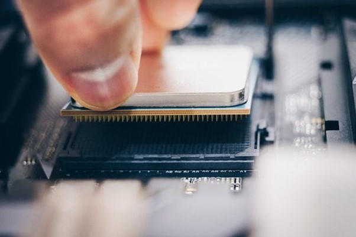

es una máquina electrónica digital programable que ejecuta una serie de comandos para procesar los datos de entrada, obteniendo convenientemente información que posteriormente se envía a las unidades de salida. Una computadora está compuesta por numerosos y diversos circuitos integrados y varios elementos de apoyo, extensión y accesorios, que en conjunto pueden ejecutar tareas diversas con suma rapidez y bajo el control de un programa (software).
El procesador (CPU, Central Processing Unit) es el componente más importante dentro del PC. Es el cerebro de todo el funcionamiento del sistema, el encargado de dirigir todas las tareas que lleva a cabo el equipo y de ejecutar el código de los diferentes programas. Muchas veces, con la ayuda del resto de componentes y periféricos. Desde un punto de vista físico, una CPU es una estructura muy compleja que se compone de miles de millones de transistores fabricados con silicio. Estos se combinan formando puertas lógicas. Estas sirven para formar las diferentes estructuras que permiten tratar las instrucciones de manera ordenada y la ejecución del código. La velocidad de un procesador viene expresada en hercios (Hz). Esto mide la cantidad de operaciones que la CPU realiza. El proceso lo lidera una señal llamada “reloj”. Suele consistir en una señal digital de onda cuadrada que marca el compás. El reloj es la cantidad de pulsos por segundo a la que trabaja la CPU. En la actualidad tenemos procesadores con más de 3 GHz de velocidad. Estos pueden realizar 3.000 veces ciclos de reloj más que los primeros procesadores que salieron al mercado hace décadas. Un procesador sigue un funcionamiento mecánico diferenciado por una serie de etapas comunes: captación, decodificación y ejecución. Aunque cada una de las arquitecturas ejecuten esas etapas de modo diferente, la intencionalidad general es siempre la misma. Además, los procesadores actuales pueden tener varios núcleos. Cada uno de los núcleos de la CPU es una CPU en sí misma. En un principio, había un solo núcleo por procesador y este era único.
